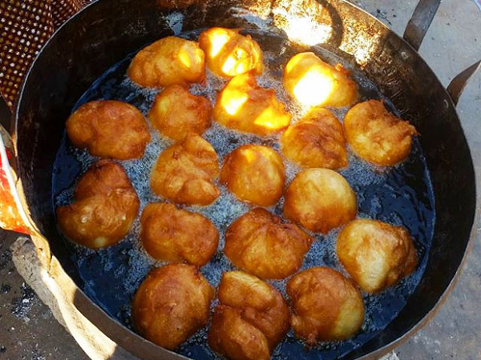

Magwinya(also known as Vetkoek or Fat Cakes

Magwinya is a South African comfort food. All it is, is a ball of dough fried in a bunch of oil
Ingredients
- 2 cups all-purpose flour
- 2 teaspoons instant yeast
- 4 tablespoons white sugar
- 1/2 teaspoon salt
- 1 tablespoon vegetable oil (plus more for frying)
- 2 cups warm water
Preparation
- In a large mixing bowl, combine the dry ingredients: flour, sugar, yeast, and salt. Mix well.
- Add the water and 1 tablespoon of vegetable oil and mix into a soft dough
- Cover the mixture with a tea towel and allow to rise for about one hour. The dough should roughly double in size.
- Mix further and let the dough rest for 10 minutes.
- Heat a large pot of vegetable oil over a medium flame for deep frying. Test the temperature of the oil by dropping a little batter in. If it sizzles, you’re ready to start frying
- With a tablespoon, add dollops of dough into the oil, using a second spoon to help push the dough down if necessary. Make sure you turn them frequently until golden brown.
- Drain over paper towels and serve whilst they are warm.
Enjoy!